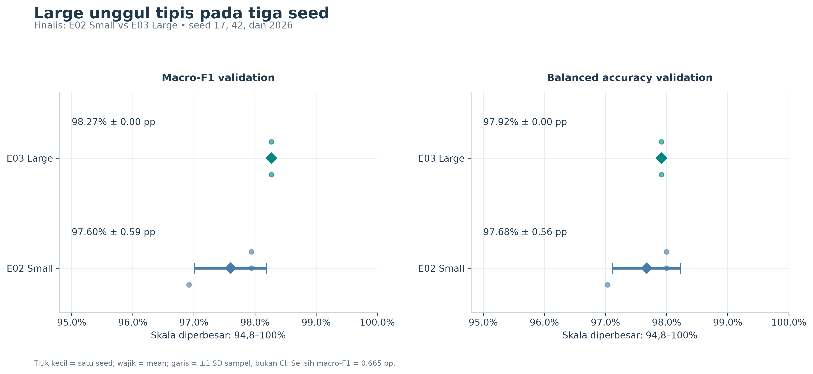
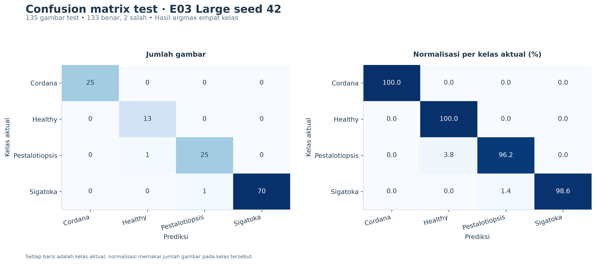
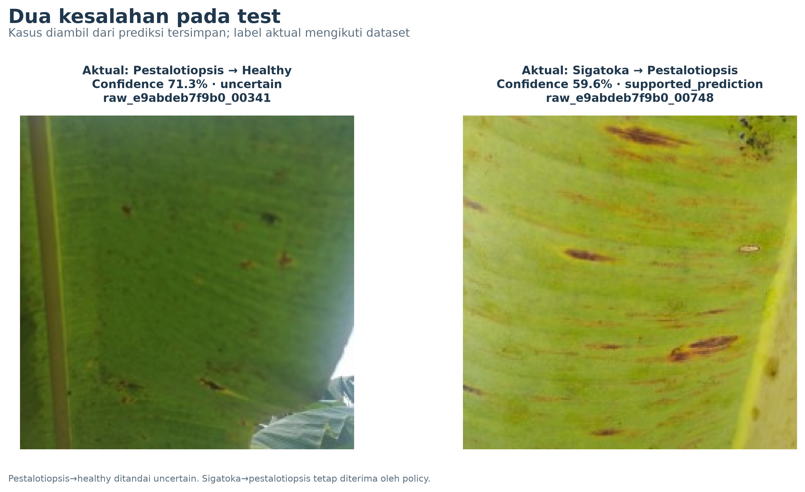
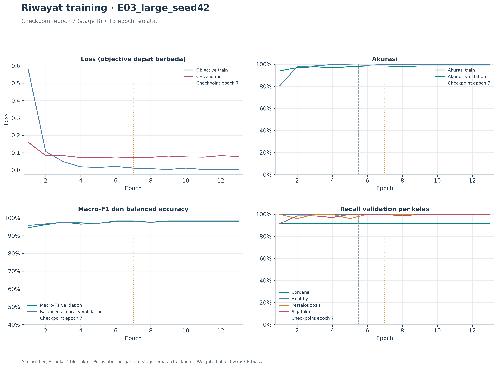
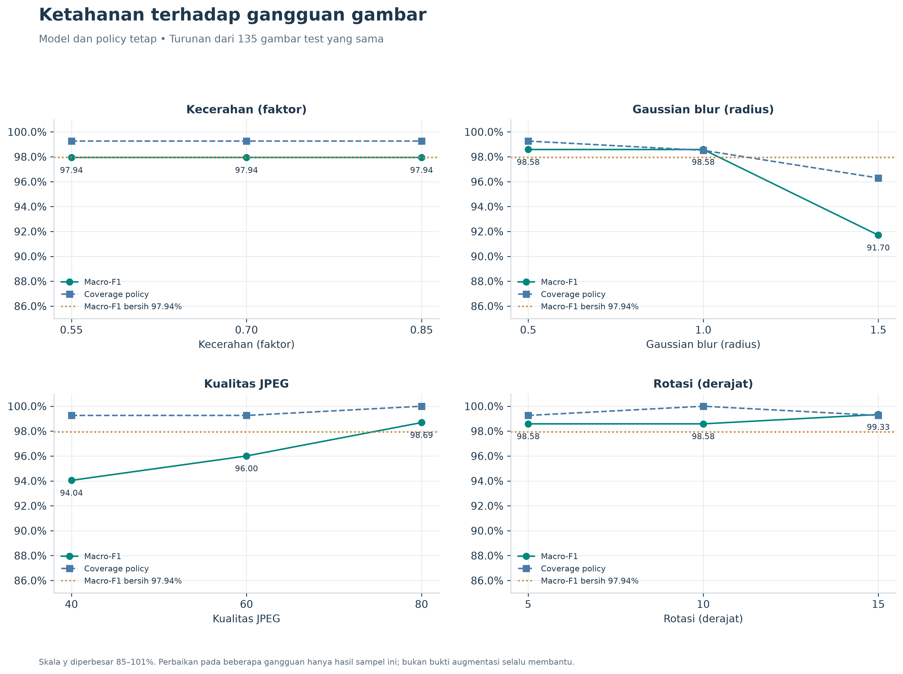
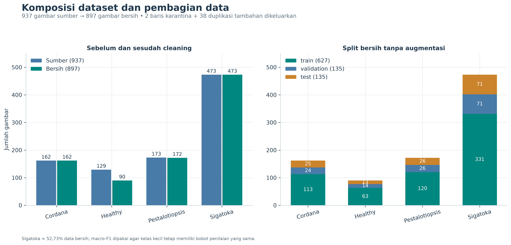

PisangLENS · Analisis artefak eksperimen
MobileNetV3-Large menjadi pilihan utama pada hasil internal ini.
Pilih resep E03 dan gunakan checkpoint E03_large_seed42 yang sudah dipilih oleh protokol.
Large unggul 0.665 poin persentase atas E02 Small pada rata-rata macro-F1 tiga seed validation.
Dibuat 07 November 2026, 14:14 WIB · Analisis dari hasil tersimpan, tanpa training atau fitting ulang.
98.27%Macro-F1 validation · mean 3 seed
98.52%Akurasi test · 133 / 135 benar
97.94%Macro-F1 test · seed 42 saja
4.21 jutaParameter model Large
Keunggulannya tipis dan belum terbukti secara independen. Model lain belum memiliki hasil test pembanding di folder ini.
Kesimpulan “terbaik” memakai validation, sedangkan test mengukur checkpoint final yang sudah dipilih.
Dasar rekomendasi
Finalis E02 Small mencapai 97.60% ± 0.59 pp,
sedangkan E03 Large mencapai 98.27% ± 0.00 pp (mean ± SD sampel dari seed 17, 42, 2026).
Selisih 0.665 pp melewati margin preferensi Small 0.50 pp yang telah ditetapkan dalam notebook.
Nilai F1 Large sama di tiga seed pada split ini. Hal itu hanya menunjukkan stabilitas skor yang teramati;
probabilitas dan CE tetap berbeda. Dengan aturan urut macro-F1 lalu CE, E03_large_seed17 menjadi run numerik teratas
(CE 0.0472). Handoff tetap seed 42 sesuai protokol yang sudah ada; test seed 17 belum tersedia.

Rata-rata dan simpangan baku antarseed untuk finalis.
Small tetap masuk akal jika kapasitas model menjadi prioritas: 1,521,956 parameter dibanding 4,207,156 pada Large,
atau 63.8% lebih sedikit. Latency Small belum diukur sehingga keunggulan kecepatannya belum dapat dinyatakan.
Pada seed 42, balanced accuracy Small 98.00% sedikit lebih tinggi daripada Large
97.92%. Recall Cordana Small 95,83% vs Large 91,67%; recall Pestalotiopsis Small 96,15% vs Large 100%.
Jadi Large tidak unggul pada setiap kelas dan metrik.
Bootstrap berpasangan validation seed 42 (2.000 replikasi, stratifikasi kelas) menghasilkan selisih macro-F1
0.326 pp dengan interval deskriptif 95% [-3.03, 3.95] pp.
Interval ini melintasi nol dan dihitung setelah seleksi pada validation yang sama; bukan CI selisih mean tiga seed atau pengujian independen.
Hasil test checkpoint final
Test berisi 135 gambar: akurasi 98.52%, macro-F1 97.94%,
balanced accuracy 98.69%. Baseline selalu memilih Sigatoka hanya memperoleh
akurasi 52.59% dan macro-F1 17.23%.
Interval 95% tersimpan: akurasi [94.76, 99.59]% (Wilson), macro-F1
[94.61, 100.00]% (stratified image bootstrap). Interval mengasumsikan gambar independen; metadata tanaman/sesi belum tersedia.

Confusion matrix test · E03 Large seed 42
Dua kesalahan: satu Pestalotiopsis → Healthy, dan satu Sigatoka → Pestalotiopsis.
Aturan confidence yang dipasang pada validation menandai kesalahan pertama sebagai uncertain, sedangkan kesalahan kedua tetap diterima.
Policy menerima 134/135 gambar (coverage 99.26%), dengan 1/134 prediksi diterima salah
(selective risk 0.75%). Pada argmax murni terdapat 1/122 gambar sakit yang diprediksi healthy;
setelah policy, 0/122 mendapat keputusan healthy yang diterima. Batas atas interval Wilson 95% untuk angka terakhir masih
3.05%, sehingga hasil nol pada sampel ini tidak berarti risiko nol.

Kedua kesalahan argmax pada test.
Training dan kalibrasi
Large seed 42 memilih epoch 7 dari 13 epoch, dengan CE validation
0.0714. Di epoch akhir, akurasi train 100.00% dan CE validation 0.0777;
akurasi validation tidak terus naik. Ini konsisten dengan manfaat early stopping/checkpoint terbaik dan kemungkinan overfit pada epoch lanjutan.
Objective weighted train dan CE biasa validation berbeda definisi, sehingga jarak kedua kurva loss tidak boleh ditafsirkan langsung sebagai besarnya overfit.

Learning curves E03_large_seed42.
Temperature scaling T=1.3769 menurunkan NLL test 0.0384 → 0.0377
dan Brier 0.0189 → 0.0175, tetapi ECE naik
1.19% → 1.48%. Kalibrasi tidak membaik pada semua metrik.
Validation yang sama dipakai untuk seleksi, kalibrasi, dan policy, sehingga hasil development berpotensi optimistis.
Ketahanan gambar
Gangguan paling merugikan yang diuji adalah blur radius 1,5: macro-F1 turun dari 97.94% menjadi
91.70% (turun 6.23 pp). JPEG kualitas 40 menurunkan macro-F1 menjadi 94,04%
dan recall Cordana menjadi 84%. Kecerahan pada level yang diuji mempertahankan label prediksi.

Macro-F1 dan coverage pada 12 kondisi stress.
Rotasi 10° menghasilkan satu keputusan sakit→healthy yang diterima. Beberapa gangguan justru memperbaiki skor pada sampel ini;
hal tersebut bukan dasar untuk memilih ulang model atau menjanjikan perbaikan pada data lain. Semua stress memakai turunan dari test yang sama.
Data dan batas bukti
Dari 937 baris sumber, 2 baris konflik label dikarantina dan 38 duplikasi tambahan dikeluarkan; tersisa 897 gambar:
627 train, 135 validation, 135 test. Audit ini mengonfirmasi tidak ada image_id atau exact content hash yang beririsan antarsplit.
Sigatoka mendominasi 473/897 gambar (52,73%), sehingga macro-F1 menjadi dasar utama pembandingan.

Distribusi kelas sebelum/sesudah cleaning dan per split.
Ada satu pasangan kandidat gambar mirip lintas train–validation yang belum ditinjau manual.
Statusnya kandidat, sehingga belum cukup untuk menyimpulkan kebocoran. Kesamaan tanaman/daun/sesi pengambilan juga belum dapat diaudit dari metadata yang tersedia.
Test healthy hanya berisi 13 gambar; recall 100% untuk kelas ini masih memiliki batas bawah Wilson sekitar 77,19%.
Evaluasi lapangan Indonesia, data di luar kelas yang didukung, dan aturan kualitas berlabel manusia belum tersedia.
Hasil ini mendukung pemilihan model untuk eksperimen/prototipe berikutnya. Bukti untuk menyatakan kesiapan lapangan belum tersedia.
Pengembangan setelah melihat test perlu holdout baru yang dipisahkan berdasarkan kebun, tanaman, atau sesi.
Efisiensi dan artefak yang dipakai
Large mempunyai 4,207,156 parameter dan bobot state_dict 17.02 MB
(16.23 MiB, optimizer tidak termasuk). Median dari median tiga sesi CPU host adalah
24.74 ms untuk forward model dan 28.36 ms untuk pipeline total, batch 1 FP32 dengan 4 threads dan warm OS cache.
Angka ini berasal dari benchmark tersimpan dan tidak mewakili latency HP.
Gunakan Checkpoint training lengkap tidak disertakan dalam paket publik ini. Paket inference terpilih tersedia di
dokumentasi model, dengan
bobot state_dict, label mapping, dan preprocessing.
SHA-256 checkpoint: fd0e0c2be2ace54eeb1ac1891f5328f78df7d94fbadef6647f3a08faef0fcee0.
Metrik semua run dihitung ulang dari logit/prediksi; epoch checkpoint dicocokkan dengan history; checksum manifest,
checkpoint terpilih, dan seluruh berkas handoff diverifikasi. Berkas training/selection.json masih bertuliskan test_status=not_evaluated
karena dibuat sebelum tahap test; hasil test yang selesai terdapat di evaluation/internal. Artefak sumber tidak diubah.
Galeri seluruh plot
45 gambar tersusun per topik. Grafik yang dibuat ulang tersedia sebagai PNG 300 dpi dan SVG;
preview augmentasi asli disertakan sebagai PNG. Klik nama untuk membuka gambar penuh.
Perbandingan model (5)
Training seluruh run (25)
Evaluasi test (6)
Robustness (2)
Dataset (6)
Efisiensi (1)
Tabel dan reproduksi
Sumber: MobileNetV3/outputs/bananalsd_notebook_device_auto_v2/ · Tidak menggunakan pencarian web atau hasil dari folder model lain.